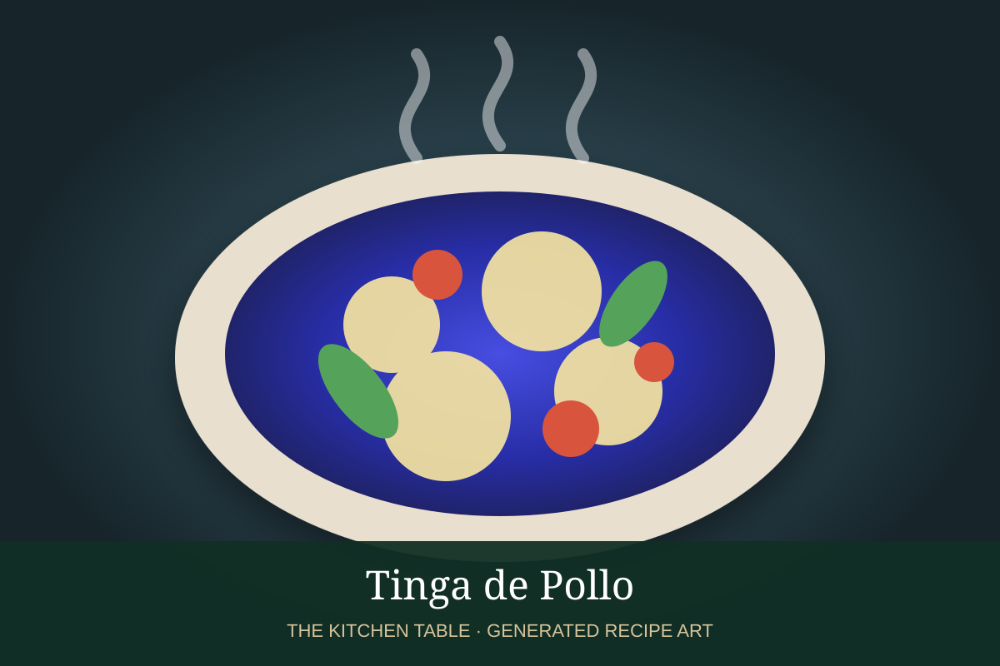

← Back to all recipes
CHICKEN · MEXICAN
Tinga de Pollo
Shredded chicken simmered in smoky chipotle-tomato sauce with onion and garlic, ideal for tostadas and tacos.
50 minServes 6

Photo: Mexico in My Kitchen
Ingredients
- 2 lb boneless chicken thighs or breasts
- 1 tbsp neutral oil
- 1 large white onion, sliced
- 3 garlic cloves, minced
- 4 Roma tomatoes
- 2 to 3 chipotle chiles in adobo
- 1 tsp oregano
- 1 cup chicken stock
- Salt
- Tostadas or tortillas
- Avocado, crema, and queso fresco
Preparation
- Poach chicken until tender, then shred.
- Cook onion in oil until soft; add garlic.
- Blend tomatoes, chipotles, oregano, stock, and salt.
- Pour sauce over onions and simmer 10 minutes.
- Add shredded chicken and simmer until coated and flavorful.
- Serve on tostadas or tortillas with avocado, crema, and queso fresco.